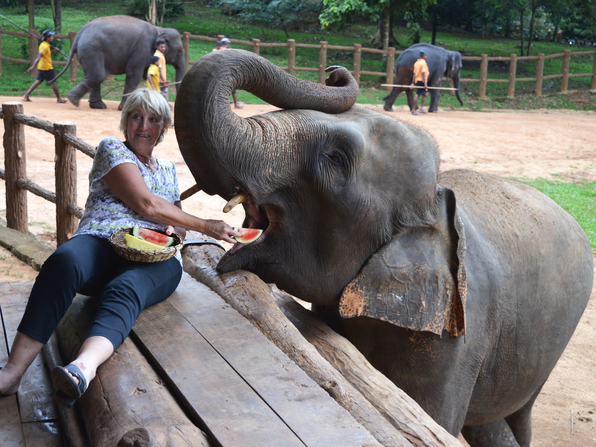

Pinnawala Elephant Orphanage is one of Sri Lanka’s most beloved wildlife attractions, providing care and protection for orphaned, abandoned, and injured elephants. Located in the village of Pinnawala, this sanctuary plays a vital role in elephant conservation and education.
History & Establishment
Established in 1975 by the Sri Lanka Department of Wildlife Conservation, the orphanage initially cared for just five elephants. Over the years, it has grown into one of the largest captive elephant herds in the world, attracting visitors from across the globe.

Daily Elephant Activities
One of the most iconic experiences at Pinnawala is watching elephants bathe in the nearby Maha Oya river. Visitors can observe feeding times, river bathing sessions, and the close bonds formed among the elephants.
Conservation & Education
Beyond tourism, Pinnawala focuses on conservation, research, and public awareness. The orphanage educates visitors on elephant behavior, habitat preservation, and the importance of coexistence between humans and wildlife.